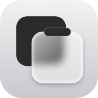

Windows용 Samepaste
폰이나 태블릿에서 쓰는 구글 계정으로 로그인하면 연결돼요.
SHA-256 체크섬
- Windows Samepaste-0.8.1-beta.6.exe
0e430b25859f4e14e0022cd189f9b3fdc198324393d06e2889f58ba1ae886b7f

폰이나 태블릿에서 쓰는 구글 계정으로 로그인하면 연결돼요.
0e430b25859f4e14e0022cd189f9b3fdc198324393d06e2889f58ba1ae886b7f